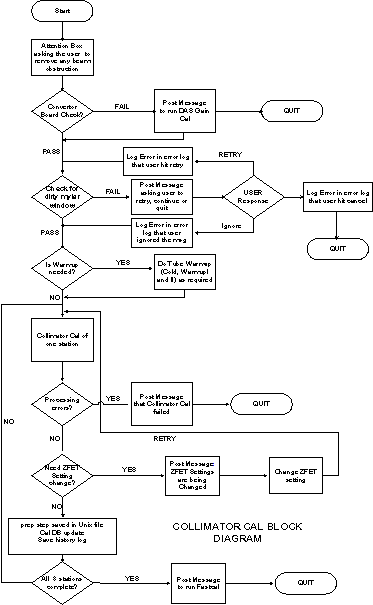

Operating Documentation
Direction 5193755-800, Rev# 8
BrightSpeed (Ltd. Access) Service Methods - Adv
Operating Documentation |
Enter Collimator Calibration through the Calibration menu on the Service Desktop. If you are not already on the Service Desktop, select the [SERVICE DESKTOP] icon.
Select the [CALIBRATION] icon.
Select [COLLIMATOR CALIBRATION] . The calibration will check for any converter boards changes for boards 47 and 48. If the board has been changed, Collimator Cal exits and posts a message informing the user to first run DAS Gain Cal.
Collimator Cal also requires the Mylar window check before the cal can proceed to avoid corrupting the cal. If the check fails, the user can clean the Mylar window and retry or continue anyway. In either case, if the check succeeds or if the user ignores the failure and continue, the cal requires tube warm-up.
| NOTE: | For a full size version of this illustration, click on the pdf icon below. |
Media File 1: Full Size Illustration: Collimator Cal Block Diagram

Illustration 1: Collimator Cal Block Diagram

MESSAGES AND POP-UPS
Before DAS Gain or Collimator Cal come up, an attention box is posted asking the user to clear any obstruction in the path of the beam. Only when the user hits [OK] will the cals proceed forward. Also after DAS Gain and Collimator Cals are done, each will post an attention box asking the user to run FastCal.
COLLIMATOR CAL INFORMATIONAL MESSAGES
Message 1: Please remove any obstruction in the path of the beam.
Message 2: Converter boards have changed. Please first run DAS Gain Cal before running Collimator Cal.
Message 3:Please check Mylar window and clean if necessary to assure proper scanner operation.
Message 4: User quit the tracking cal after the Mylar window check failed.
Message 5 User ignored the Mylar window check failure and continued with the tracking cal.
Message 6: DAS Gain Cal was not completed.
Message 7: Collimator Cal was not completed.
Message 8: The Z-FET setting was changed for this scan.
COLLIMATOR CALIBRATION
A method has been devised of tracking the motion of the focal spot so that the collimator opening can be reduced, thus reducing dose.
With collimator tracking, the position of the collimator is no longer a fixed function of aperture and focal spot size. The two cams, which operate independently, form the sides of the collimator and must move with the motion of the focal spot. Information regarding the focal spot position is sensed through special channels called the z-channels. The information from the z-channels is translated into the position of the beam on the detector at the iso channel. The translation process depends on calibration polynomials and operating points, which are determined by the Collimator Calibration process.
DAS GAIN
This program computes the DAS Gain correction factors needed for the z-channel ratio (which determines the focal spot and beam position) and for channel 762 (which monitors blocking for tracking). The z-channel ratio correction is used in Collimator Calibration. There are two sets of correction factors-one for each cam.
CONVERTER BOARD CHECK
First, the ID's of the converter boards used by channel 762 and the z-channels (boards 47& 48) should be checked to see if they match the converter boards that were in place when the last DAS Gain Cal was performed. If there is no match, the user is directed to perform a DAS Gain Cal before doing Collimator Cal.
MYLAR WINDOW CHECK
Assuming the tube is warm when Collimator Cal is begun, the first scans should check if there is any contrast or other material on the Mylar window that will corrupt the calibrations. Four one-second rotating scans should be taken at 80 kvp, 20ma with aperture at 4x125, 4x250,4x375, and 4x500 respectively. If the 20 point filtered offset corrected channel 762 data vs views divided by the offset corrected view averaged value of channel 762 falls below 0.90 for any scan, for any row, a message will be displayed to the user and a response from the user is needed before continuing. The user should be allowed to go ahead without further action, clean the Mylar window and repeat the blockage scan, or quit the operation completely. The message should say:
Please check Mylar window and clean if necessary to assure proper scanner operation. Indicate if you want to repeat the check scan or continue with the Collimator Cal, or abort Collimator Cal.
SWEEP SCAN
The information needed to perform calibration is obtained using sweep scans. The sweep scan is a stationary scan, with x-ray tube at 12 o'clock position, where the cam positions go through their entire range of motion in 37 incremental steps. At each step, which is a 100 views, the offset corrected view averaged data is collected for the data channels and the z-channels. This information with DAS, Gain is the basic information that is used to perform the calibration. Scans are only done at 120kv with the head bowtie. The time of these scans is 5.9 seconds, which allows for 37 steps at 100 views with time allowed to transition between the steps. The information from rows 2A and 1A are used to calibrate the cam on the A side while the cam on the B side uses the information from the B rows. The signals from side A should be monotonic, starting high and ending low, while the signals from side B are monotonic, starting low and ending high.
COLLIMATOR CALIBRATION
This is the major program that computes the calibration.
The outputs to the cal database are: mapping sides A & B, target position on iso channel, ratio range, and dose reduction. Some ID information that determines where the data goes is stored in the file with the other data: spot size, data channel fet, z channel fet, DAS Gain used, aperture size, and focal spot position. Also the ID numbers for the DAS Converter boards that are used by the z-channels and channel 762 need to be stored in the cal database. In measure mode, the channel positions the ratios, zratio, and dratio for both sides must be stored in addition to the other output.
The Collimator Cal needs to be done after a detector change or tube change. If a converter board change has been made, affecting the z channel or channel 762 (boards 47&48), or if the detector has been changed, the DAS Gain Cal should be done. Tube change does not require redoing the DAS Gain Cal. At the beginning of Collimator Cal, the serial numbers of the converter boards should be queried, and it should be determined if there has been a change since the last DAS Gain Cal was done. The software should force the user to leave collimator cal and perform DAS Gain Cal.